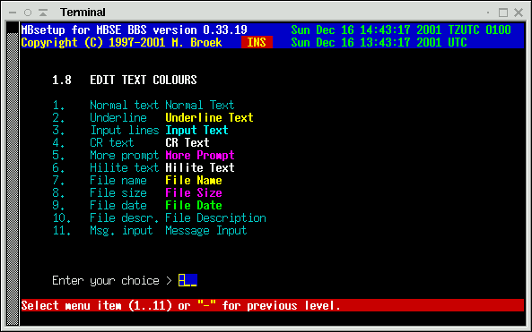
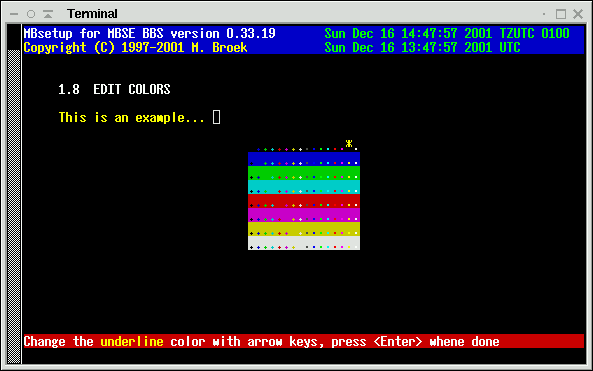

Last update 01-Mar-2007
MBSE BBS Setup - Global Setup
1.1. Fidonet Aka's.
Here you can enter 40 fidonet addresses. These are 5d addresses. Make sure you group the different zone's together, strange things will happen if you don't group them.
1.2. Edit Registration Info.
BBS Name The name of your BBS
Maildomain Your internet mail domain name (or system host.domain.com
if you don't have a maildomain).
Sysop uid The Unix name of your Sysop account
Sysop Fido The Fidonet name of your Sysop account
Location The Location of your BBS
OLR id The packet name for Offline mail downloads.
Comment A comment line for your BBS
Origin The default origin line for echomail
Newuser The default username "bbs" for new users.
My FQDN My real internet Full Qualified Domain Name.
A note abou the last item, My FQDN. This MUST be the name that is
returned with nslookup 1.2.3.4 (use your internet IP adress there)
if you have a fixed IP address. Systems that are on a dynamic IP address and use
some sort of dyndns service may put that dyndns FQDN in there. Using this will
cause the other system to do twice as much dns resolve actions, so use this only
when needed. Another note, what you put in here has nothing to do with mail or
mail domains, that needs to be in the second option of this screen. The My FQDN
field is used by the Internet BBS Chatserver (IBC) to allow bbs systems to build
a chat network.
1.3. Edit Global Filenames.
System logfile The name of the main logfile Error logfile The name of the errors logfile Debug logfile The name of the debug logfile Mgr logfile The name of the area-/filemgr logfile Default menu The name of the default main menu Chat logfile The name of the logfile for chatting Welcome logo The name of the BBS logo ANSI file
1.4. Edit Global Paths
Home dirs The path to the users home directories
FTP base The FTP base path, ie. /opt/mbse/ftp/pub
Arealists The path where area lists and filebone lists are stored
Ext. edit The full path and filename to the external editor
Rules dir The path to the directory to store area rules
Magic's Where the magic filerequests are kept
DOS path The DOS drive and path
Unix path The Translated DOS path in real
LeaveCase Leave outbound .flo filenames as is, No forces to uppercase
Nodelists The path to the nodelist directory
Inbound The unprotected fidonet inbound
Prot inb. The (password) protected fidonet inbound
Outbound The outbound for the main aka
Out queue The outbound queue for temporary files
*.msgs A netmail directory from where *.msg mails are tossed
These are *.msg files can be created by several doors. (Not in use yet)
Bad TIC's Where bad TIC files are saved
TIC queue Where TIC files for downlinks are kept
TMail DOS The T-Mail 8.3 (short) base path (empty = disable)
TMail Win The T-Mail long filename base path (empty = disable)
If you fill in the DOS path then the DOS path and Unix path are translated
to DOS paths in the flo files for outbound mail sessions. You only need this if
another mailer uses the outbound that doesn't understand Unix paths.
The DOS path is a fake, but it must match the other mailer.
Note that the TIC queue must be somewere in the Unix path, otherwise it is
impossible to create a DOS path from the path to the TIC files in that
directory. To set this up correctly is also important if you use other mailers
as well, for example binkd, or even a DOS binkly-style mailer running from
a network. All those mailer must "see" the same file attaches in the .flo
files.
1.5. Edit BBS Configuration
Private system Set to true when only pre-registered users are allowed Exclude Sysop True is Sysop will be invisible Show connect Show connection info at logon Ask protocols Ask protocol before each up/download Sysop level The Sysop security level Password Length The minimum password length, should be 6. Password Char. The password hiding character Idle timeout The idle timeout in minutes Login Enters Maximum times for only enter <Enter> Login Attempts Maximum login attempts Homedir Quota Maximum size in MBytes for each user Location length The minimum length of the location (3 in Holland!) Show new msgarea Show new available message areas at logon (for OLR users) OLR Max. msgs. Maximum messages to download, 0 is no limit. OLR Newfile days The maximum age for newfiles in the OLR packet OLR Max Filereq Maximum filerequests allowed for OLR users BBS Log Level What will be logged or not the BBS program Utils Log Level What will be logged or not for utilities Utils slowly Should utilities release timeslices CrashMail level Minimum level to allow sending netmail crash FileAttach level Minimum level to allow attach files to netmail Min diskspace MB At which low diskspace level utilities should stop working. Simult. logins Maximum simultaneous logins allowed, 0 is unlimited, 1 is adviced. Child priority Subproces nice priority, 0=high, 15=low CPU load. Filesystem sync Call sync before and after execute. Default language Default language (English).The minimum diskspace setting is to prevent that files get corrupted if your filesystem is full. All drives are checked except CD-roms and floppies and the /boot directory if that one is on a separate filesystem. Ext2, ext3, reiserfs, msdos and vfat partitions are checked. The lowest free diskspace found counts. Default is 10 MB.
The Child priority sets the nice value for example zip/unzip, virus scanners etc. Modern fast hardware will do fine with a low setting, older (pre PII) hardware may need 15 to prevent a too heavy CPU load.
The filesystem sync setting is to call sync before and after the execute call, such as when unzip is called. Almost all GNU/Linux systems need this because GNU/Linux uses asynchronous directory changes. Since Linux 2.5.19 it should be possible to mount filesystems synchronous. If this setting is No on asynchronous filesystems mail and files can get corrupted. XxxxBSD systems use synchronous directory updates and don't need this switch. If you don't know what all this is about, leave this to the default setting.
Choice of default language. English is the best choice because that is the only language that is complete in the default installation. In the user setup another language may be used, the language set here is then used as a backup.
1.6. User flag Descriptions.
In this menu you can give the 32 users flags a meaningfull description.
1.7. New users defaults.
Access level The access level and flags after registration Cap. Username Capitalize the username Ask Sex Ask for Male/Female Ask Voicephone Ask for voice phonenumber Ask Dataphone Ask for data phonenumber Telephone scan Scan for duplicate numbers Ask Handle Ask for handle (nickname) Ask Birth date Ask for birthdate (needed for checks) Ask Location Ask for users location Ask Hot-Keys Ask for hot-keyed menus (default is yes) One word names Allow one word names Ask address Ask user for his/her home address Give email Give new users email access (default is yes) Ask Screenlen Ask new users to set their screen length Do newmail check Yes/No or Ask new user if for newmail check at logon Do newfiles check Yes/No or Ask new user if for newfiles check at logon
1.8. Text Colors.
Several prompts use different colors. They can be changed with the following menu.
 
1.9. Sysop paging
For sysop chat a protocol is used to communicate with the mbtask daemon which has a very simple IRC like chatserver. For sysop/user chat a forced channel with the name #sysop is used.
Page length The length of a page in seconds Page times Maximum number of times a user may page the sysop Sysop area Message from user to Sysop area number Ask reason Ask reason for chat, this will be logged Log Chat Log the chat conversation Prompt Chk. Check at menu prompts for Sysop breaking in Freeze Time Freeze users time during chat
1.10. Fileecho Processing.
A note, when you change the number of Systems or Groups, the databases affected will be updated automatic.
Keep days How long TIC files should be kept on hold Hatch pwd The internal hatch password. Make this weird. Drv space The minimal free space on your disk in kilobytes Systems The maximum number of connected nodes Groups The maximum number of fileecho groups Max. dupes The maximum number of entries in dupe database Keep date Keep original filedate Keep netm Keep sent netmails Loc resp Respond to local created filefind messages Plus all Allow filemgr +all command Notify Allow filemgr notify=on/off command Passwd Allow filemgr/areamgr passwd command Message Allow filemgr message=on/off command Tic on/off Allow filemgr tic=on/off command Pause Allow filemgr pause/resume commands
When you change one of the Allow filemgr settings, you also need to edit the file /opt/mbse/english/macro/filemgr.help to reflect the new settings. Default all these switches are set to Yes.
1.11. Edit Fidonet mail and echomail processing.
Note that the first 2 mailboards must also exist in the normal mail areas if
you want to see what is in them. Here they are defined for quick access of the
tosser. For the Max. systems and groups see 1.12. If you use MBSE BBS together
with a DOS based BBS (using DOSEMU or mars netware emulator), you can set the
behaviour of the outbound to 4d. addressing instead of 5d. This option may
dissapear in the future.
Another option is present, this is the pktdate option. This
is the full path and filename to an external program that can inspect and
correct the mail .pkt files. Originally I put this in to run pktname of Tobias
Ernst of 2:2476/418 to fix y2k problems in the incoming mail. At this time
most y2k fixes are build in, but in case you need it it's there. To make it
clear; the y2ktools written by Tobias are static compiled for GNU/Linux and they
should run on all GNU/Linux i386 versions. Until now, I still use pktdate because
it is necessary.
Badboard The path and filename of the bad messages Dupeboard The path and filename of the duplicate messages Pktdate Full path and filename of a .pkt preprocessor Max pkts. Maximum Kb. of mail packets before a new one is created. Max arcs. Maximum size in Kilobytes of an arcmail file Keep days How many day should we keep ARCmail on hold Echo dupes Maximum number of entries in the echomail dupe database Reject old Reject echomail messages older then n days Max msgs Default maximum number of messages in each area Days old Default number of days old to keep messages Max systems Maximum number of nodes to connect to echomail Max groups Maximum number of echomail groups 4d address Use 4d. addressing (not needed you only use MBSE BBS) Split at Gently split messages after n KBytes (12..60) Force at Force split of messages after n KBytes (16..63) Plus all Allow areamgr +all command Notify Allow areamgr notify=on/off command Passwd Allow areamgr/filemgr passwd command Pause Allow areamgr pause/resume commands
When you change one of the Allow areamgr settings, you also need to edit the file /opt/mbse/english/macro/areamgr.help to reflect the new settings. Default all these switches are set to Yes.
A note about the splitting of messages. Some tossers can't handle messages greater than 16 KBytes, these tossers are rare these days. Most tossers can handle messages of 32 KBytes. To set these values on the safe side set "Split at" to 27 and "Force at" to 31. This means that a long newfile report will be split after 27 KBytes when a new group of files should start in the report. If it can't find that point because a large number of files is in the group that is just being processed, the message split will be forced right after the file that passes the 31 KBytes limit. I use values of 1 KBytes below maximum for overhead such as SEEN-BY and PATH lines. Values larger then 32 KBytes is not a good idea, recent tests in May 1999 have shown that your messages will not reach all systems if they are larger then 32 KBytes. Splitting is used for newfiles reports and gated news articles to Fidonet.
1.12. Edit Internet mail and news processing.
Email and news is setup here. There are three possible configurations which you can set with 1.12.11:
- No internet. If you don't have any connection to the internet use this setting. Email will come from the default Fidonet UUCP gate and will be send out via the UUCP gate. Users have email addresses like user@f2802.n280.z2.fidonet.org Note, the username is their Unix name when sending email.
- No maildomain. If have internet but don't have your own maildomain (most dialup systems) you should use this mode. Email will be sent via your local SMTP port, then through your own sendmail (or whatever you use) to your ISP. As soon as you are connected to the internet the mail will be sent to your ISP's mailer. In your sendmail you should define the mailer of your ISP as Smarthost. Incoming email will still come from the UUCP gate. Users have email addresses like user@f2802.n280.z2.fidonet.org Incoming email comes from the default Fidonet UUCP gate. Note, the username is their Unix name. If you have your own maildomain, don't use this option, use the next option:
- Own maildomain. If you are permanent connected to the internet
either with a static or dynamic IP address use this option. Use this option
also if you have an UUCP domain and have a dialup UUCP connection. Also
you can use this for dialup if you have your own maildomain without UUCP,
you will then fetch the mail from a multidrop mailbox (POP or IMAP) and
send the mail using SMTP via the SMTP mailer of your provider.
If you have a dynamic IP address you can still get a DNS name from for example dynip.com Incoming email will come directly from the internet, but if someone sends email via the UUCP gate it is also accepted. Users have email addresses like user@yourbbs.domain.org. Note, the username is their Unix name and yourbbs.domain.org must be an existing internet domain.
POP3 node The POP3 node to use, should be localhost POP3 user@domain Use user@domain to login in the POP3 server SMTP node The SMTP node to use, should be localhost NNTP node The NNTP node to use, should be localhost NNTP m.r. If the NNTP server needs the Mode Reader command NNTP user The username for the NNTP server if needed NNTP pass The password for the NNTP server if needed News dupes The number of entries for the news dupes database. Email aka The Fidonet aka to use for the fidonet.org UUCP gate UUCP aka The default Fidonet UUCP gate, 2:292/875@fidonet Emailmode The email mode, discussed above News mode Newsfeed mode, INN, rnews or UUCP. Articles The default maximum newsarticles to fetch per group. Split at Gently split newfiles reports after n KBytes (12..60) Force at Force split of newfiles reports after n KBytes (16..63) Control ok Allow news control messages to be gated No regate Don't regate already gated messages In rnews mode the NNTP entries are replaced by: Path rnews The full path and filename to the rnews binary. In UUCP mode the NNTP entries are replaced by: UUCP path The full path to the uucppublic directory. UUCP node The UUCP nodename of your ISP.
1.13. Allfiles and Newfiles lists.
These are the settings that affect the generation of newfiles and allfiles reports.
New days The number of days old files are "newfiles" Security The highest security level to include files in the reports Groups The number of newfile groups the newfiles database can hold
1.14. Mailer Setup.
Note that you can't disable FTS-0001 sessions as that is a mandatory session protocol in Fidonet. There are 40 phonenumber translations present, this is for countries with lots of telephone operators with all kind of prefixes for carrier select functions. The setting of TCP/IP flags is important too, this gives the information what this system will do. If you only enter IBN as TCP/IP flags then the system will only call IBN nodes (binkp). The default is XX,CM and TCP/IP systems (internet) should use the XX,CM,IBN,IFC flags. If you cannot do TCP/IP connections, leave TCP/IP "phone" empty. The three TCP/IP fields are used to give your system information via EMSI or binkp to the other nodes.
Mailer logl. The logging level for mailer sessions TCP/IP "phone" The TCP/IP "phone" number (IP address or domain name) TCP/IP flags The TCP/IP capability flags for TCP/IP sessions TCP/IP speed The TCP/IP linespeed Timeout reset The timout for normal modem commands Timeout connect The timeout for waiting for connect Dial delay The maximum delay between calls, minimum is 10 seconds. No Filerquests Disable filerequests No callout Disable callout No EMSI session Disable EMSI No YooHoo/2U2 Disable FTS-0006 sessions No Zmodem Disable zmodem protocol No Zedzap Disable zedzap protocol No Hydra Disable Hydra protocol No MD5 Disable binkp MD5 passwords Zero Locks OK Allow zero byte lockfiles from another OS Phonetrans 1..40 Maximum 40 phone number translations Max. files Maximum files to request, 0 is unlimited Max. MBytes Maximum MBytes to request, 0 is unlimited
1.15. Edit HTML pages setup.
Here you setup the HTML pages that can be created with the mbfile web command. These are HTML pages of your download areas and indexes of all areas. If there are pictures in these areas thumbnails are created if you have the convert command available. The document root is the same as defined in your web server. The link to ftp must be created from that directory to your ftp base directory. To do that become root, cd to the document root and type ln -s /var/spool/mbse/ftp files In this case the link is called files. Note that all download areas are accesible, there is no user authentication yet available.
Docs root The path to the httpd documents root. Link to ftp The link to the ftp directory. URL name The URL of your webserver. Charset The default character set, ISO-8859-1. Author name The author name you want in the HTTP headers. Convert command The graphics convert command. (ImageMagick needed). Files/page The number of files to display per web page. Hist. limit Limit the number of mailhistory.html lines, 0 is unlimited.
1.16. Manager flag Descriptions.
In this menu you can give the 32 area-/filemgr flags a meaningfull description.
 Back to index
Back to index